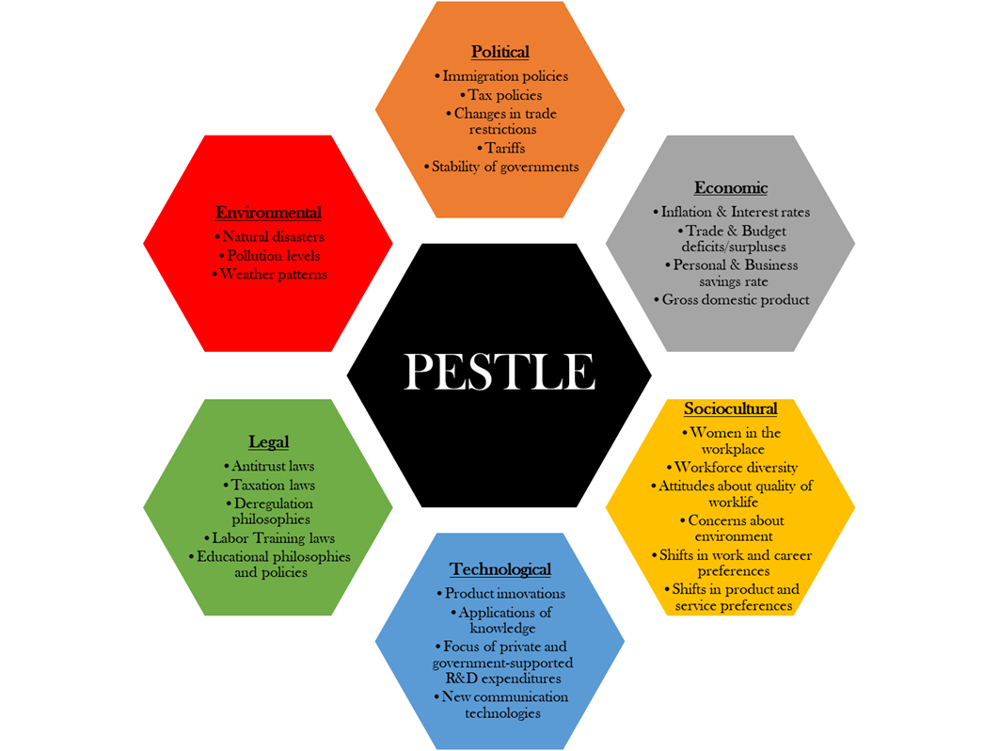
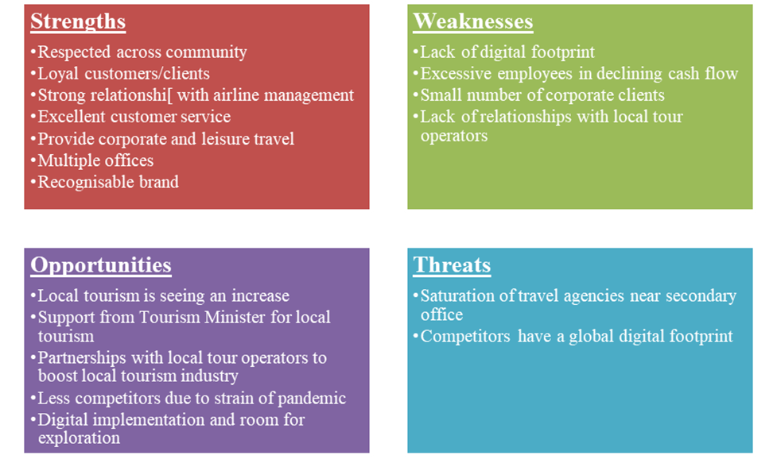
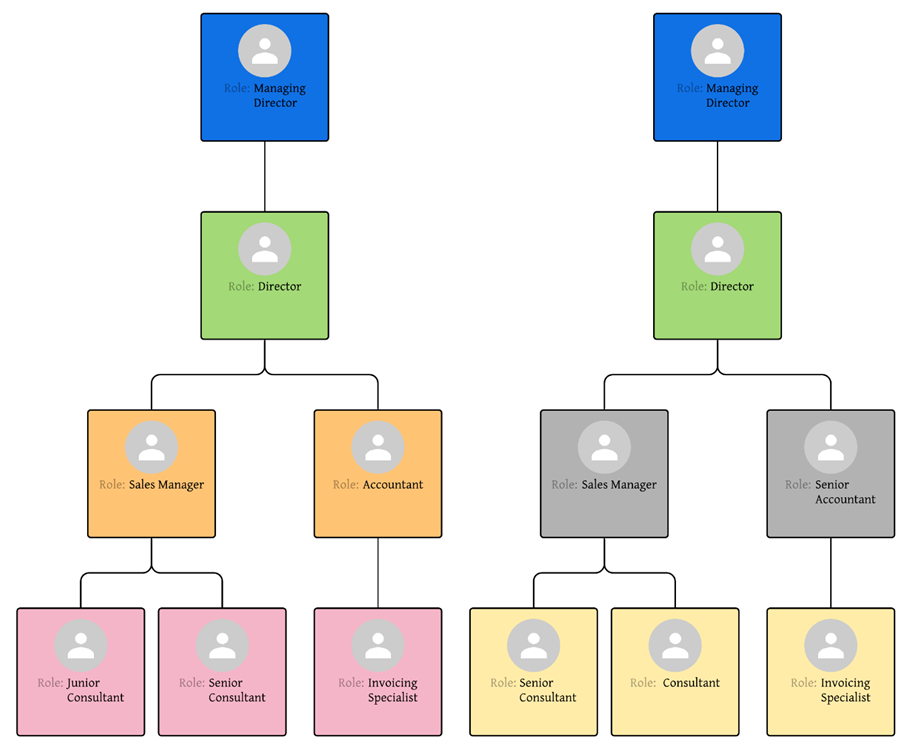
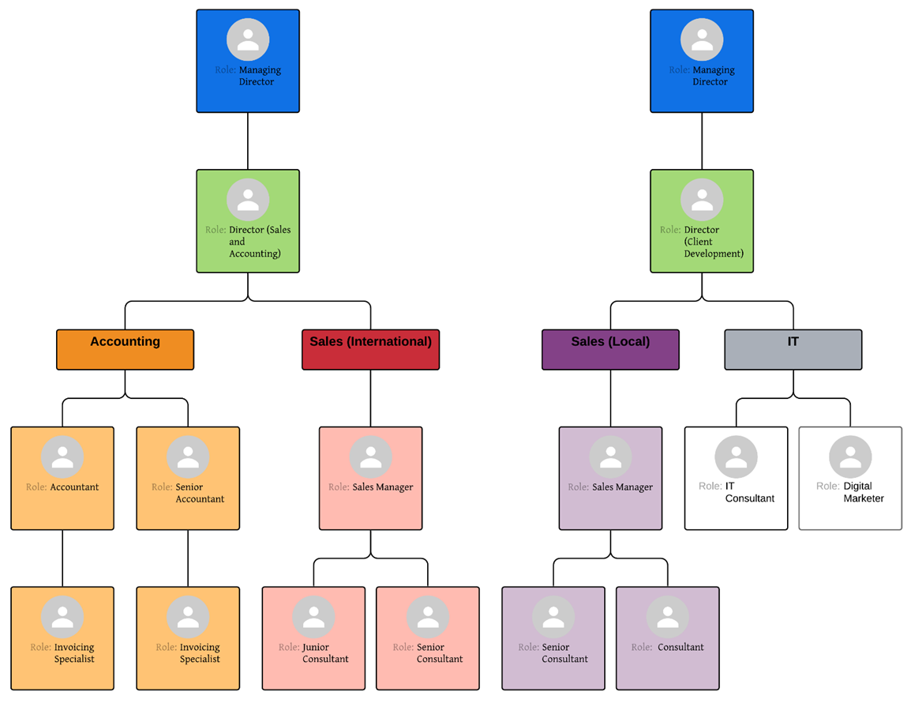

Strategic Management and Leadership Analysis and Organizational
Restructure
Submitted: 27/04/2021
1. Introduction
FlyNow Travel is a small family-owned travel agency with approximately 20 employees based in
Johannesburg, South Africa. Initially operating under a different name, Flywell Travel; FlyNow Travel
was built out of a split partnership with Flywell Travel and over 40 years has constantly been
recognised as a respectable travel agency in both corporate and leisure travel. As a member of the XL
Travel Group, FlyNow Travel forms part of the diverse, owner-managed agencies, as they strive to bring
their expert knowledge and experience to their customers providing them with a doorway to their
destination.
Over the last year, the COVID-19 pandemic has ravaged the world, its people and all businesses from small
to global enterprises. Many businesses were forced to close doors, and the BEACH (Booking, Entertainment
& Liver Events, Airlines, Cruises & Casinos, Hotels & Resorts) industry was one of those
affected the most. In March 2020, the BEACH stocks lost $332 billion in value (Neufeld, 2020). Before
the pandemic, the travel and tourism industry warranted 10% of the global economy and with the various
global travel restrictions and regulations, as well as the unlikelihood of vaccine passports or some
alternative, being implemented anytime soon (Cherney, 2021); small businesses like FlyNow Travel need to
implement a new strategy to ensure the business does not shut down and can sustainably continue to
provide their services to their customers.
2. Stakeholder Analysis
R. Edward Freeman defines that one of the purposes of strategic management is to give an organisation a
direction and help reach it. Stakeholders – being those who can have an impact, both significant
and minor, in the implementation and direction of the plan – must be considered in the strategic
management process (Freeman, 1984). In assisting FlyNow with their new strategic management approach,
the first step would be to analyse their stakeholders and perform a stakeholder analysis.
2.1. Identifying Stakeholders
Identifying the various stakeholders that affect FlyNow are broken down into: Internal and
External stakeholders. The Internal stakeholders are those that have the direct relationship
with the business, and all of the other stakeholders will be considered External (Fernando, 2021). Many
of the identified stakeholders listed below are also those found in the tourism industry themselves,
however given that FlyNow is a small business, it’s effect and impact on the stakeholders is not
as significant as the impact of some of the stakeholders on FlyNow (Stainton, 2020).
2.1.1. Internal Stakeholders
Three internal stakeholders have been identified for FlyNow Travel:
Employees
Tourists/Clients
XL Travel Group.
The 17 employees within FlyNow are not only the backbone of the company, but will also
dictate how well the company performs financially and how well they maintain and improve their
reputation and brand. The tourists/clients are the lifeline of the business, as their
loyalty, and willingness to use the travel agency over competitors is what has kept this business alive
for 40 years and will continue to keep the business running and growing. Unlike other travel groups, the
XL Travel Group offers their travel agencies an opportunity to be run in their own way
by only paying a membership fee. The risk for the XL Travel Group is that should FlyNow Travel not be a
reputable brand anymore, it could harm the broader group’s standing and reputation.
2.1.2. External Stakeholders
The external stakeholders identified are:
Local airlines
International airlines
Government (local and foreign)
Utility organisations
Car rental agencies
Hotels
Tour operators
Transport/Taxi organisations
Banks
Educators/Training Facilitators
The airline industry is the backbone of the tourism industry both on a
local and international level, as the main reason a customer uses a
travel agent. The government are those who control the travel restrictions between all
countries especially given the problem and the world’s current COVID-19 pandemic. Utility
organisations are those that provide the travel agency, the airports and the country the
necessary infrastructure and necessities in running the business and supports the industry. Given South
Africa’s electricity crisis, this stakeholder has an impact on the business and its success.
Car rental agencies,hotels, tour operators and transport/taxi
organisations rely on the likes of travel agents and booking sites to help boost their own
economy and organisation (Stainton, 2020). Banks are the external stakeholders affected
by both the customers, the business and all other stakeholders as they provide the finances for all
stakeholders. The education/training facilitators are the last identified stakeholders
as upskilling any new or current employees will be halted as the organisation has very little to no
business.
Figure 1 is the stakeholder map originally adapted from Mendelow’s Power Dynamism Matrix for
Environment Scanning (Mind Tools Content Team, n.d.). By using this stakeholder map, management at
FlyNow Travel can now identify which stakeholders should be prioritised and engaged with more
frequently. The impact of the stakeholder on FlyNow Travel and the impact of FlyNow Travel on the
stakeholder have also been identified to allow management to understand how to engage with these
stakeholders.
2.3. Stakeholder Engagement
To ensure the success of FlyNow’s strategy moving forward, proper stakeholder engagement must be
observed. Based on the stakeholder map in Figure 1, those who have an impact on the strategy must have
their regulations and requirements met. Such as the governments with their regulations and restrictions,
as well as airlines whom are instructed when and where they can fly during COVID retractions. In South
Africa, the power utility Eskom, struggles to provide power constantly and the business may be subject
to predetermined power cuts and this must be monitored to ensure the business can continue to provide
value to their customers. The employees of FlyNow must be constantly engaged with management to discuss
new strategies and ways of working moving forward. They ensure the success of the business going
forward.
The stakeholders impacted by FlyNow form part of a broader discussion and will be impacted by how well
FlyNow address the ongoing pandemic and the new strategy. They must be kept in constant discussion and
potentially be brought in as informants. For example, hotels and tour operators would have seen a
decline in business given the lack of tourists and as a result must be informed of any new strategies,
be it partnerships, market penetration or development with FlyNow. This will allow the
stakeholder’s respective strategies to align with an external strategy that could assist in
boosting the tourism industry.
3. External Factors (PESTLE Analysis)
Before deciding on a new strategy going forward, FlyNow Travel need to identify the impact of the various
external factors on the business. A PESTLE analysis, seen in Figure 2, is carried out to fully
understand and address various factors such as:
Political
Economic
Sociocultural
Technological
Legal
Environmental (Morrison, 2013).

Fig.2 - PESTLE Analysis (Morrison, 2013)
3.1. Political
The various political aspects that could affect FlyNow Travel stem from the responses that governments
from various countries have given with regards to the COVID-19 pandemic. Now that the virus has multiple
strains and a second and third wave looming, flights to and from various countries are being banned.
Given the large population of Indians in South Africa, direct flights from India and South Africa were
cancelled, and so travelling to India had to be done via a second country, such as UAE or Qatar. But due
to the increasing number of infections in India, many countries have banned tourists from travelling to
India or coming from India. These countries include the UAE, Australia, Canada, Saudi Arabia, UK, USA
and China (CNN Staff, 2021).
3.2. Economic
South Africa is still a developing country, with a heavily influenced economy, and the pandemic had
affected an already downward economy resulting in the unemployment rate reaching a record value of 30.8%
in the last quarter of 2020 (Bohlmann, et al., 2021). The restrictions from government, lack of
unemployment funding has affected FlyNow and its employees as management had given all employees three
months of salary in an attempt to help amidst the ongoing pandemic.
3.3. Sociocultural
The pandemic affected all business in an unplanned manner and resulted in majority of the workforce,
working from home. This began to increase frustrations at home and with travel restrictions in place on
an international travel, many tourists are looking for alternatives to satisfy their vacationing
desires. As a result, local tourism and domestic travel has seen a sharp increase within South Africa as
lockdown restrictions have begun to ease (Domestic Flights South Africa, 2021). With the tourism
industry at a standstill, the employees at FlyNow Travel have to be downsized to ensure that the
business does not begin to suffer a loss and go into debt.
3.4. Technological
Travel agencies like FlyNow Travel does not only have competition in physical travel agencies but are at
a severe disadvantage to Online Travel Agents such as Booking.com, TripAdvisor, Airbnb and Trivago. The
need for an online and digital presence is vital as this will allow a small business to reach more
customers and a broader range of customers. With the use of the likes of Google Ads Services, FlyNow
Travel could see a significant boost in customers and economic activity.
3.5. Legal
With the pandemic ongoing and working from home still being the preferred option, FlyNow Travel must
adhere to these regulations with their staff. These regulations and safety protocols are also adhered to
if and when any customers visit on the premises. Given the nature of the business, the government
regulations and restrictions must be considered when planning and creating an itinerary for any client.
For example, any person travelling from India to Dubai, must be out of India for 14 days before being
permitted into Dubai.
3.6. Environmental
There are not many environmental aspects that must be taken into consideration when analysing the
external factors of FlyNow Travel. Natural disasters may cause concern for travellers travelling to the
affected places, and should this occur, the consultants at FlyNow Travel must be considerate and conform
to any regulations presented by any governing bodies and converse this to their clients. Travelling may
be a seasonal matter, but given travel restrictions, this is not of any concern for the near future
given international restrictions on travel.
4. Strategy Formulation
Now that part of the external environment has been analysed using the PESTLE analysis, the internal and
the rest of the external environments must be analysed using the SWOT analysis before formulating a new
strategy.
4.1. SWOT Analysis
The strengths and weaknesses identified are internal to
FlyNow Travel and the opportunities and threats to FlyNow Travel are
external to FlyNow. The goal of a SWOT analysis is to take the strengths and capitalise on them;
subsequently it is to identify weaknesses and improve on them. The opportunities identified must be
monitored as this can lead to a new venture and have a positive influence and lastly the threats must be
eliminated to ensure survivability and profitability of FlyNow Travel (Parsons, 2021). Figure 3 shows
the key points of the SWOT analysis.
4.1.1. Strengths
FlyNow Travel’s management has a 40-year relationship with the Indian community in Johannesburg and
is highly respected. The loyalty of their clientele is a definite strength of the company as was
apparent when the original partnership with the Flywell Travel brand was dissolved. The management at
FlyNow Travel also have trusting relationships with many managers at reputable airlines both
international and local. The biggest strength that is displayed is that the consultants provide
excellent service to the customers (both tourists and corporate) by resolving multiple issues and
catering to their clients’ needs. FlyNow Travel has the distinct advantage of having their offices
in two locations in Johannesburg, the head office based in an affluent neighbourhood near their
corporate clientele and a smaller office in a more central location to the Indian community. Given that
majority of the clients at the secondary office are walk-in clients who are Indian/Pakistani/Bangladeshi
nationals, the service, expertise and recognition provided by the consultants are FlyNow Travel give
them a competitive advantage over their competitors.
4.1.2. Weaknesses
Due to the restrictions placed by international and local governments because of the ongoing pandemic,
international leisure travel is seen to be on the decline. As a result of this FlyNow Travel has seen a
decline in customers and cash flow while still holding onto their entire staff. As respected as they
are, FlyNow does not have a digital footprint and relies more on walk-in clients and phone calls given
by reference. Another weakness is that the number of corporate clienteles is small and limited as this
forms part of the backbone of the FlyNow Travel cash flow. FlyNow travel has many relationships with
international tour operators but due to the pandemic cannot utilise these relationships, contrary to
this FlyNow does not have many relationships with local tour operators.
4.1.3. Opportunities
With the COVID pandemic still ongoing, many travellers are looking to travelling locally and experience
tourism in their own country. There is support from the South African government’s Minister of
Tourism to meeting the demand of local travellers to experience local tourism (Business Tech, 2021).
Many competitors have closed their doors due to the pandemic with a slow recovery plan, this gives
FlyNow the opportunity to use their brand and recognition in the community to look for local tour
operators and partnerships to improve the business and tourism within South Africa. Another opportunity
exists with a digital implementation including a website and potential phone app to bring an easier
experience to the customers during lockdown.
4.1.4. Threats
A major threat to FlyNow Travel is the location of their secondary office, as the area is saturated by
travel agencies giving FlyNow Travel fierce competition. Besides physical travel agents, global
competitors, also known as Online Travel Agents (OTA), such as Booking.com bring an easier experience to
their users making the need for physical travel agents null.
4.1.5. Summarised SWOT Analysis

Fig.3 - Summarised SWOT Analysis
4.2. Proposed Strategy
The new strategy for FlyNow Travel would be a dual-approach strategy combining the non-price competitive
strategy of Product Development and a horizontal integration of a
Merger type strategy. The Product Development approach will allow FlyNow
Travel to explore the opportunities of the digital space such as digital marketing, personalised web
page, phone applications giving some competition to existing OTAs. The Merger approach works
hand-in-hand with Product Development strategy as this will provide management to pursue partnerships
with local tour operators and other tourism services; such as game and safari lodges and other notable
tourist attractions to benefit from the current local tourism boom and allow that to be another backbone
to the company’s cash flow.
By utilising a dual approach as suggested, FlyNow will have the opportunity to continue operating under
the strain of the pandemic, improve the marketing and recognition of the brand through the digital space
and continue to provide their customers with the expert knowledge and experience they have been
accustomed to for the past 40 years.
4.3. Strategy Evaluation
This would be the best way forward as the main backbone of FlyNow’s business was their few
corporate accounts and the large international leisure customers. By working with local tour operators
and companies, FlyNow can now develop and create new packages for their customers to purchase and
experience while international restrictions are still in effect. This will allow FlyNow to develop new
marketing strategies to reach the public and in turn boost the local tourism industry. When travel
restrictions are lifted and international travel will be allowed, the partnerships with local tour
operators and various packages can still be leveraged for the all customers, including those travelling
to South Africa.
5. Strategy Explanation
In order for FlyNow to implement the new strategy well, prior research was done on general advice and
knowledge on how to improve the sales performance of any travel agency. Being in an increasingly
competitive industry, the goal of any travel agency is to ensure the customer and user experience is
better than any other agencies and even OTAs. It can be seen that two key factors stand out in order to
improve the sales of any travel agency. The first is a digital presence, inferring to using the likes of
social media to improve marketing and reaching a better audience and having some sort of online
consultation available. The second factor is partnerships or business-to-business networking. This will
allow the likes of FlyNow Travel to leverage off these relationships for a better customer experience
creating the idea of a “one-stop shop” for any and all travel requirements (Lemax, 2018)
(Morgaine, n.d.).
5.1. Supporting Innovation and Change
As per the research done on improving the sales of a travel agency, it can be seen that the dual-approach
proposed would address both of the improvement factors mentioned above. The Merger approach will allow
for new packages to be created in the local market that can be given to customers at competitive prices
benefitting both partners involved. This then leads into the Product Development approach by allowing
FlyNow to leverage not only new partnerships, but those existing with local airlines, hotels and car
rental agencies to provide a full package and complete experience to their customers at a competitive
cost.
The introduction of these new local products not only benefit all parties, but allow the tourism industry
within South Africa to continually grow and in a sustainable manner, as this brings a new product on
offer for any international travellers. The addition of the local tourism will give FlyNow a new
direction to work towards and once the pandemic is nearing its end, and the global tourism industry is
nearing its normal state, the new products on offer for local tourism provides FlyNow with a new income
stream building on their current offerings and service.
The other part of the Product Development approach is the digital aspect of the new strategy. By
exploring the digital space and creating the digital presence, FlyNow Travel is able to explore new
marketing opportunities using social media. In conjunction to this, the creation of a website that can
be done by the XL Travel Group will make the user experience more streamlined and safer during the
pandemic. This will also allow FlyNow travel to be on a somewhat equal playing field as their
competitors such as the Flight Centre group and even OTAs.
5.2. Critical Analysis
The dual-strategy approach of the Product Development and Merger strategies will address all of the
opportunities and threats that are present to FlyNow Travel while leveraging their current strengths and
would hopefully address some of their weaknesses. The dual-approach chosen holds an advantage over a
Digital Transformation Strategy as the Digital Transformation Strategy looks at adjusting the business
to address and present itself in the digital marketplace (Briggs, 2020). If FlyNow were to implement a
Digital Transformation Strategy, they would only be addressing a part of the threats presented by their
competitors. It would allow them to be more innovative but would require major organisational changes
such as people and infrastructure which would be increasingly costly.
The tourism industry is a hyper-competitive environment and choosing a Cost Leadership strategic approach
may allow FlyNow to gain a significant advantage over their competitors. The issue with using this
approach is that the profit margins are then reduced and in order to stay in business with a positive
cash flow, FlyNow needs majority share of the customers. Although their reputation and service exceed
others, this approach may not be sustainable going forward. However, using elements of the
Cost-Leadership approach in creating the packages would allow FlyNow to become more unique in their
product offerings leading to a more Focused strategy based on the local tourism industry. Subsequently,
when travel restrictions are eased and international tourism is being welcomed, the Focused approach
will not be sustainable and could result in FlyNow requiring a new strategic plan.
Another reason that the dual-approach should be the preferred strategic way forward is that it allows
FlyNow to grow their business in a declining economy with the ongoing pandemic. If the company had
chosen to use a Defender strategy, and protect their current customer base, whilst attempting to
maintain stable growth the company would not survive the remainder of the pandemic and may be forced to
close doors. Although their customer base may be loyal and their corporate accounts are focused mainly
on local travel, it is not sustainable for the business during the pandemic as their leisure market
would be at a standstill. Although the vaccine rollout is underway on a global scale, international
restrictions are still in place and all rules must still be adhered to.
FlyNow Travel could attempt to use the Diversification strategy in an attempt to continue to operate
within the tourism industry, but move from the travel agency area to the tour operator area. This would
give FlyNow Travel a distinct competitive advantage over their competitors, however may be a very costly
strategy going forward. This strategy would require large organisational change and may only bring
profitable business at a further stage than management is willing to wait for.
6. Implementation Plan
In order to execute the new strategy, an implementation plan must be developed for FlyNow Travel. The
structure of the implementation plan would be as follows:
Research and Discovery
Risk assessment and Budget
Roadshow
Assign responsibility
Develop schedule
Review.
6.1. Research and Discovery
The implementation plan begins with the Research and Discovery phase which will allow management to
decide on the desired outcomes, how will it benefit the business and how does one define success
(Malsam, 2019). This will allow management to agree on the communal outcome, potential
organisational changes and most importantly ensuring that the new strategy will achieve the
business’s objectives.
6.2. Risk Assessment and Budget
The next step in the implementation plan is to perform a thorough risk and budget assessment. The
risks, assumptions and mitigation strategies developed here will be vital to the execution of the
new strategy. The risk assessment will involve in-depth research into similar strategic initiatives
as well as assessing the current situation and the final goal to ensure that the implementation will
be as smooth as possible. In addition, performing a thorough risk assessment will leave the business
in good standing before implementing and give rise to better decision-making as the implementation
goes on (Keqa & Albarina, 2016).
Since FlyNow Travel is a small business, budgeting for the implementation of this new strategy will
be crucial as it should not impact current business cash-flow including salaries paid to employees
and service provided to customers. Considering the risks identified it will allow management to
budget accordingly and adjust spending for the implementation of the strategy (Morpus, 2020).
6.3. Roadshow
The idea behind adding the Roadshow phase of the implementation plan is to present the new strategy
and goals to all major stakeholders. In doing so, this allows management to gain valuable buy-in
from all major stakeholders and adjust the strategy accordingly. This includes presenting the
proposed strategy and implementation of it to those businesses that form part of the Merger strategy
proposed for FlyNow Travel.
By presenting the proposed strategy and implementation to potential partners, it will allow those
potential partners to provide valuable feedback and adjust their strategy accordingly to accommodate
FlyNow’s potential partnership. Discussions of the type of new products that can be developed
should be discussed in detail here and taken into account during the implementation of the strategy.
6.4. Assign Responsibility
Assigning champions/owners for the implementation process and smaller goals will give that
champion/owner the responsibility of tracking the overall implementation. This includes tracking and
monitoring how productive the team is, assigning tasks and keeping the implementation on the correct
track (Morpus, 2020). Choosing the champion is an important part of the implementation plan as this
will also present accountability and ownership to the relevant person and team. The champions/owners
will also be responsible for ensuring the implementation continues to align to FlyNow’s
objective and vision.
Assigning responsibility does not only involve choosing the champion/owner but would also involve
creating and allocating the team, whether temporary or permanent, to ensure the implementation of
the strategy is done so seamlessly.
6.5. Develop Schedule
This stage of the implementation plan is when the actual implementation would actually occur and the
project is physically underway. Given the nature of the organisation, its structure and the type of
strategic implementation that will be occurring, it would be best to choose an Agile methodology,
specifically a Kanban approach.
The Kanban approach is based off four core principles and six practices, and allows the project to
focus on what needs to be done and achieving it in a manageable way. The first principle looks at
what is currently being done and will allow the Kanban methodology to overlay and fit over the
current workflow and methodology. The second principle looks into incrementing small change in a
manner that encounters minimal resistance. The third principle addresses organisational structure,
roles and responsibilities and allows the Kanban methodology to promote an open method of working.
The fourth principle encourages collaboration from all team members with the goal in mind of
reaching an optimal performance level. The six practices look at managing the workflow, by
visualising it, and limiting the work that is currently in progress, defining a structure to the
process itself, integrating feedback loops and increasing the collaboration (Kanbanize, n.d.).
With the approach being chosen the next step is to break down the goals and objectives into
milestones. Milestones will allow for gradual, effective and constant implementation of the strategy
(Morpus, 2020). Breaking each of the milestones into smaller tasks fits into the Kanban methodology
allowing the project team to realise the benefits of Kanban such as revealing bottlenecks in the
workflow, engaging in a more responsive team and promoting a more productive and collaborative
environment (Kanbanize, n.d.).
Once the milestones and tasks have been identified along with appropriate timelines, the project
manager will be able to use project management software to work out the critical path and create
potential buffers in the project plan to account for potential scope creeps (Morpus, 2020).
6.6. Review
The final step and constantly recurring step of the implementation plan would be the review with
management and other key stakeholders. The review will allow all the necessary stakeholders to
receive constant updates on the implementation, track the progress and monitor and evaluate any
changes to business. This will also allow for retrospectives, giving valuable insights as to what
has been working well during the implementation, what has not been working well and any major set
backs that were encountered and how it was dealt with. Preferably these review sessions would occur
at each milestone; where minor milestones would include retrospectives with the project team and
major milestones including management and key stakeholders.
7. Organisational Restructure
In order for the proposed strategy to be as effective as possible, the organisational structure must
be analysed and restructured in order to achieve the organisations objectives.
7.1. Current Organisational Structure

Fig.4 - Current Organisational Structure
Figure 4 presents the current organisational structure, and it can be seen that currently FlyNow
Travel has a Divisional structure in their organisation. Although it has been working
throughout the years, the pandemic has brought to light the ineffectiveness of the
organisation’s structure. Since corporate clients are handled by the two Sales Managers and
Senior Consultants, the Junior Consultant and Consultant handle all leisure clients alongside one of
the Managing Directors. The two Directors oversee all operations relating to both office locations.
One of the noticeable disadvantages of the Divisional Structure is that functional activities are
duplicated. This type of structure would not work with the proposed strategy as there would be
multiple gaps within the organisation that would create multiple management issues and loss of
partnerships with potential partners in the industry.
7.2. Proposed Organisational Structure

Fig.5 - Proposed Organisational Structure
Figure 5 presents the proposed organisational structure for FlyNow Travel for the proposed
dual-approach strategy. As can be seen from the proposed structure, the organisational structure
will move from a Divisional Structure to a Functional Structure.
The Functional Structure is more catered to the proposed strategy as this allow for more specialised
areas that can focus on specific selling points. The proposed structure presented in Figure 5
creates a dedicated team for international sales and a dedicated team for local sales. Given that
the proposed strategy recommends partnerships with local tour operators and tourist services, this
would allow a new revenue stream to reveal itself for FlyNow Travel giving them a distinct advantage
over their competitors who would be looking solely at providing local citizens international travel.
By dedicating a sales team for international travel and one for local travel, this will allow FlyNow
to monitor and expand the business in the relevant space as time goes on, creating a sustainable
organisational structure.
The addition of the IT department with a sole IT consultant caters to the Product Development part of
the proposed strategy, whereby FlyNow Travel could explore the digital space. The IT
consultant’s skills would range depending on the chosen route in the digital space, however in
the beginning the necessary skills required would be that of web development and web page
maintenance. The second role required in the IT department would be that of a digital marketer, as
this person’s role would be to increase the digital footprint of FlyNow through the use of
social media, building a better presence and utilising the likes of social media and ad services to
boost the recognition of the FlyNow Travel brand.
The organisational restructure is required as the current divisional structure does not work for a
travel agency such as FlyNow. Typically, a divisional structure is best suited for companies that
offer multiple product offerings or have multiple geographical locations/divisions. The major
disadvantage of this structure is that although there is operational flexibility, there is not
separation of specialised functions; and for a small business such as FlyNow Travel, this structure
is not effective (Lumen Learning, n.d.).
The proposed functional structure would grant FlyNow efficiency in their operations given their
dedicated departments and teams with specialised skills. A disadvantage of using the functional
structure is that cross-functional communication may not be effective or may not occur at all. This
could lead to a lack of innovation and flexibility within the company as the strategy is implemented
and utilised. However, a functional structure is definitely more suited as a travel agency provides
a specific type of product, travel and tourism, and has no need for any diversification of products
and services offered (Lumen Learning, n.d.).
A benefit of the proposed structural change is that staff upskilling would become more relevant and
specialised. For example, the Directors will no longer be responsible over a sales manager and an
accountant but rather be focused on sales and accounting and client development. Their focus becomes
aligned with the proposed strategy and will assist in achieving the company’s objective. The
same benefit of upskilling passes onto the sales team, by allowing them to specialise in their
respective departments.
The corporate clientele that is currently allocated to the two Sales Managers and Senior Consultants
would remain with the respective members. The reason for this is that the corporate clientele look
to travel only locally and their current point of contact within FlyNow Travel has not changed over
the last decade, and given the nature of the contracts with corporate clients, the relationship with
these clients can continue with the respective members of the organisation. This will allow FlyNow
to utilise the new proposed strategy and its opportunities while maintaining stable growth and level
of service provided to their existing customers.
7.3. Critical Analysis
As FlyNow Travel is a small business with less than 25 employees, restructuring the organisation may
not be as challenging as if it were a larger enterprise. The benefits realised in the restructuring
of the organisation are focused more on improving the efficiency of the business operations while
expanding it in a localised manner. Given the new opportunities that could arise, it allows the
staff opportunities to upskill themselves in order to help execute the implementation of the
proposed strategy. However, this upskilling could cost the business more than anticipated as the
upskilling may require highly specialised training. With the pandemic ongoing combined with the
urgency to implement the proposed strategy, business may not be willing to cover the costs of any
extra training. This could potentially be resolved by bringing in management consultants that could
assist in the implementation of the proposed strategy as well as facilitate the training of the
organisation.
In all organisations, there will always be resistance to change from all levels of the organisation.
Restructuring the organisation may involve downsizing, rightsizing or delayering which may not be
accepted by some members of the organisation. The use of the Kanban methodology will allow all
members of the organisation to adapt to the changes to the organisation in a gradual manner and will
give transparency throughout the entire process. The inclusion of a change manager will assist in
adjusting all staff member to the new structure of the organisation.
The introduction of an IT consultant who’s focus would be the website of FlyNow travel may not
be accepted by some of the consultants as they may feel that the implementation of this type of
technology may make them redundant and could lead to a job loss. To mitigate this, a clear
discussion must be had with all stakeholders stating the capabilities of the website in the short
and long term. If the website is dedicated to giving quotations on various packages and deals and
will connect customers with one of the consultants, this would be a positive change to the
organisation. However, should the website be able to process the details and requirements of the
customer without the need of a consultant, this may be met with negative reactions from the
consultants, as this website could potentially replace them saving the company money.
The COVID pandemic is still ongoing, and although vaccine rollouts are underway, international
leisure travel may not return to normal until the end of 2022 (Business Tech, 2021). The proposed
restructure suggests a dedicated team for international travel and one for local travel, and this
may create unnecessary friction between the employees as one department has no option but to wait
until the pandemic is over, whereas the other department would become the most prioritised and
crucial department of FlyNow Travel. Mitigating this concern may be the most challenging as this is
not something that management nor the proposed strategy can control. This is something that is
dependent on the effect of the vaccine, and foreign government’s travel restrictions.
Overall, the proposed dual-approach strategic plan and organisational restructure would have a
positive effect on FlyNow Travel and would allow them to grow the business in a sustainable manner
for the foreseeable future.
8. Recommendations and Conclusions
Although the proposed strategic plan and implementation plan would address all of FlyNow’s
concerns involving their competitors, and potential opportunities that they could use to their
advantage and boost their business. The proposed approach tackles multiple aspects in a digital and
business first manner. During the implementation of the strategy, there could be a better way of
executing the strategy and the implementation of it. A more extensive analysis of the dual-approach
strategy could be done to determine if the proposed strategy would be sustainable for the next 10
years. Subsequently, qualified or trained professionals may be required to ensure that the
implementation of the proposed strategy is done so in the correct manner.
In conclusion, FlyNow Travel’s current situation has been evaluated and presented. The
stakeholders were identified and analysed and were categorised as having an impact on FlyNow or
being impacted by FlyNow. The stakeholders were further mapped to determine their relative power and
interest with regards to the business. An environmental analysis was done, looking at both internal
and external factors. The external environment was analysed using the PESTLE analysis and internal
was done using the SWOT analysis. A dual-approach strategy combining the Product Development and
Merger strategic approach was proposed for FlyNow detailing its benefits over other strategies. An
implementation plan was presented and recommendations have been given for the analysis on FlyNow.
Bohlmann, J. et al., 2021. COVID-19 has hurt some more than others: South Africa needs
policies that reflect this. [Online] Available at:
https://theconversation.com/covid-19-has-hurt-some-more-than-others-south-africa-needs-policies-that-reflect-this-151923 [Accessed
25 April 2021].
Briggs, J., 2020. What is a Digital Transformation Strategy? | Ionology
answers. [Online] Available at:
https://www.ionology.com/what-is-a-digital-transformation-strategy/#top [Accessed
25 April 2021].
Business Tech, 2021. South Africa’s tourism businesses need to change their
models: minister. [Online] Available at:
https://businesstech.co.za/news/business/483663/south-africas-tourism-businesses-need-to-change-their-models-minister/ [Accessed
25 April 2021].
Cherney, M., 2021. Tourism Recovery Darkens In '21 Amid Delays in Shots. New
York: Eastern Edition edn.
CNN Staff, 2021. Travel to India during Covid-19: What you need to know before you go |
CNN Travel. [Online] Available at:
https://edition.cnn.com/travel/article/india-travel-covid-19/index.html [Accessed
25 April 2021].
Domestic Flights South Africa, 2021. There's never been a better time to travel,
South Africa - Domestic Flights South Africa. [Online] Available at:
https://www.bizcommunity.com/Article/196/747/214847.html [Accessed 25 April
2021].
Fernando, J., 2021. Stakeholder Definition. [Online] Available at:
https://www.investopedia.com/terms/s/stakeholder.asp#:~:text=Internal%20stakeholders%20are%20people%20whose,and%20outcomes%20of%20the%20business. [Accessed
20 April 2021].
Freeman, R. E., 1984. Strategic Management: A Strategic Approach. London: Pitman
Publishing Inc..
Kanbanize, n.d. What Is Kanban? Explained in 10 Minutes |
Kanbanize. [Online] Available at:
https://kanbanize.com/kanban-resources/getting-started/what-is-kanban [Accessed
26 April 2021].
Keqa, A. & Albarina, J. R., 2016. Risk Assessment in Project Management |
PECB. [Online] Available at:
https://pecb.com/article/risk-assessment-in-project-management#:~:text=The%20benefits%20of%20performing%20risk,with%20the%20risk%20assessment%20approach. [Accessed
26 April 2021].
Lemax, 2018. 8 tips how to increase sales in a travel company? - Lemax Software
Blog. [Online] Available at:
https://www.lemax.net/blog/how-to-increase-sales-in-a-travel-company-8-tips-for-better-sales-performance/ [Accessed
25 April 2021].
Lumen Learning, n.d. Common Organizational Structures | Boundless
Management. [Online] Available at:
https://courses.lumenlearning.com/boundless-management/chapter/common-organizational-structures/ [Accessed
26 April 2021].
Malsam, W., 2019. What is an Implementation Plan & How Do I Create
One?. [Online] Available at:
https://www.projectmanager.com/blog/implementation-plan#:~:text=An%20implementation%20plan%20is%20a,resources%20that%20will%20be%20needed. [Accessed
26 April 2021].
Mind Tools Content Team, n.d. Stakeholder Analysis - Project Management Skills From
MindTools.com. [Online] Available at:
https://www.mindtools.com/pages/article/newPPM_07.htm#Interactive [Accessed 23
April 2021].
Morgaine, B., n.d. 7 Revenue-Boosting Strategies for Your Travel
Business. [Online] Available at:
https://articles.bplans.com/7-revenue-boosting-strategies-for-your-travel-business/ [Accessed
25 April 2021].
Morpus, N., 2020. How to Create an Implementation Plan in 2021 | The
Blueprint. [Online] Available at:
https://www.fool.com/the-blueprint/implementation-plan/ [Accessed 26 April
2021].
Morrison, M., 2013. Strategic business diagnostic tools: theory and
practice. s.l.:CreateSpace Independent Publishing Platform.
Neufeld, D., 2020. Hardest Hit Companies of the COVID-19 Downturn: The
'BEACH' Stocks. [Online] Available at:
https://www.visualcapitalist.com/covid-19-downturn-beach-stocks/ [Accessed 16
April 2021].
Parsons, N., 2021. What Is a SWOT Analysis and How to Do it Right in 2021 (With
Examples). [Online] Available at:
https://www.liveplan.com/blog/what-is-a-swot-analysis-and-how-to-do-it-right-with-examples/ [Accessed
25 April 2021].
Stainton, D. H., 2020. Stakeholders in tourism: Who are they and why do they matter? -
Tourism Teacher. [Online] Available at:
https://tourismteacher.com/stakeholders-in-tourism/ [Accessed 20 April 2021].